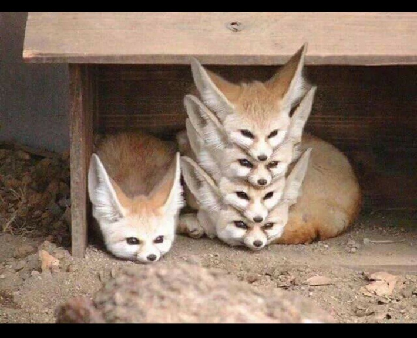
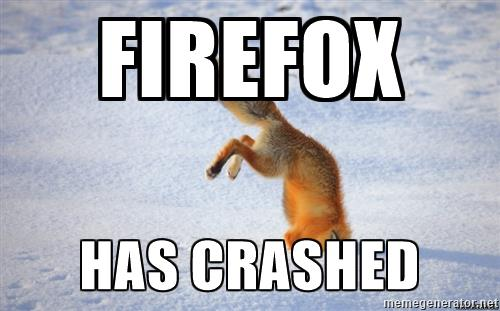

Firefox v roce 2017
Michal Stanke
<mstanke@mozilla.cz>
,
@MozillaCZ
,
OSS Víkend 2017, Bratislava
Firefox
2017
Stalo se
✝ staré systémy
✝ zásuvné moduly (výjimkou Flash)
kratší vývojový cyklus
64-bit pro Windows
Firefox ve více procesech
Firefox v sandboxu


Quantum
na počátku bylo Servo
jádro nové generace
napsáno v Rustu
využití GPU
CSS, vykreslování, DOM, UI
Photon
nové UI
i pro dotyková zařízení
počítač i mobily
Děkuji a stahujte ;)
getfirefox.com
Michal Stanke
@MozillaCZ